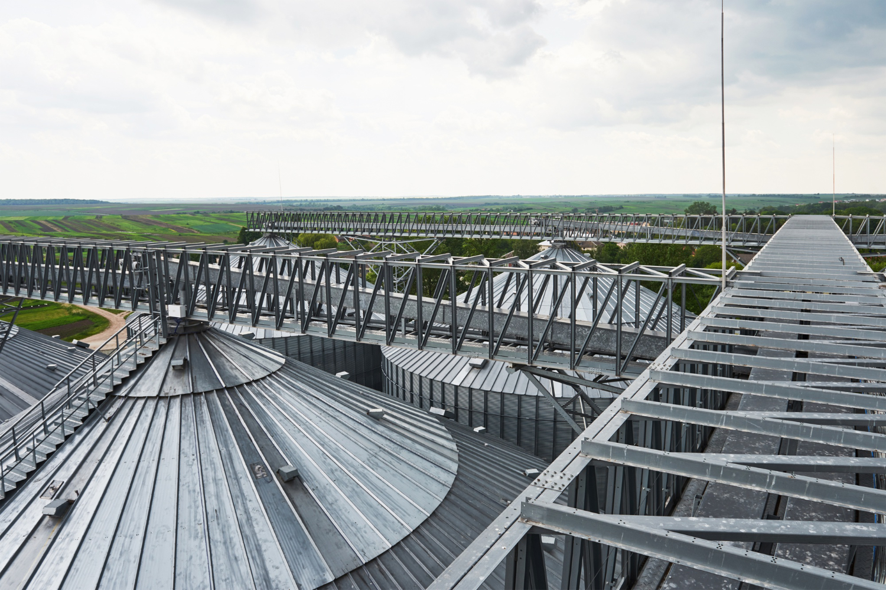

Zincirli Konveyörler
Tahılın yatay taşınmasında güvenilir ve dayanıklı taşıma çözümü. Zincirli konveyörlerimiz, uzun mesafelerde dahi yüksek verimlilikle çalışacak şekilde tasarlanmıştır. Sağlam yapısı ve modüler tasarımı sayesinde farklı tesis düzenlemelerine kolayca adapte edilebilir.
Teklif Almak İçin İletişime Geçin arrow_forward

Neden Soylu Silo Zincirli Konveyörler?
swap_horiz
Yüksek Kapasiteli Yatay Taşıma
Uzun mesafelerde bile büyük hacimli ürünleri kesintisiz taşıma.
bolt
Düşük Sürtünme ve Enerji Tüketimi
Optimize edilmiş iç yapı sayesinde minimum enerji kaybı.
link
Dayanıklı Zincirler
Aşınmaya ve ağır yüklere karşı yüksek dirençli, uzun ömürlü özel zincirler.
widgets
Modüler Tasarım
Kolay montaj ve farklı tesis ihtiyaçlarına göre esnek konfigürasyon.
domain
Çok Yönlü Uygulama
Tarım ve endüstriyel tesislerde geniş kullanım alanı.